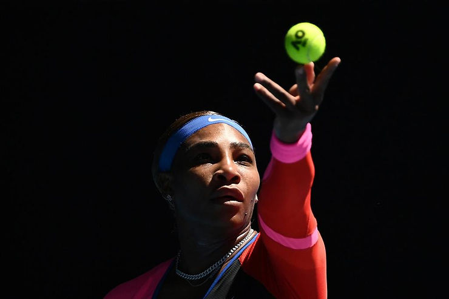
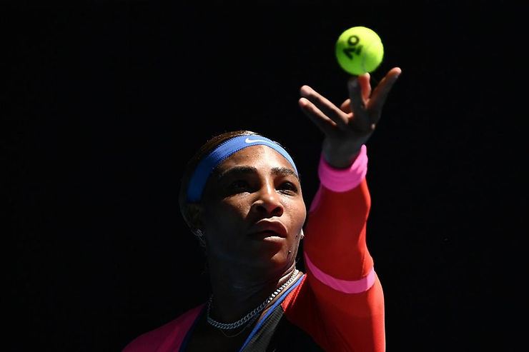

Texto da associada Dra. Adriana B. Pereira – Drix Pereira
Pontifícia Universidade Católica de Goiás – PUC Goiás

Desde o final do século XIX, o esporte moderno é concebido como um agente civilizador das pessoas, com a função de “moldar” os corpos que a ele se submetem, de acordo com os parâmetros de um corpo “normal”, “sano”, “disciplinado” e “competitivo”, a fim de que sejam capazes de assumir o “lugar” que lhes é designado pelas relações de poder. Dentre esses parâmetros, a cor, a religião, a etnia, o gênero, a orientação sexual, o status social, o modo de vida, o modo de pensar, o modo de ser, a formação acadêmica, entre outros, atuam como barreiras à inclusão plena.
Diante do exposto a tenista Serena Williams, foi um exemplo de garra, de determinação, de confronto e de superação. Um exemplo de mulher que lutou pela sua vida e pelos seus sonhos, um exemplo força física e mental, que nunca desistiu, que não deixou as dificuldades a derrubarem, que não deixou as adversidades sistêmicas serem mais forte que ela.
Desconstruir conceitos sociais é questionar sua origem, verificar seus pressupostos, seus limites e suas conclusões. Fazer isso do ponto de vista da Psicologia Social do Esporte com os conceitos de raça e gênero é tarefa complexa, pois eles estão entrelaçados às questões de poder, de dominação, de controle social de forma estrutural. A construção desses conceitos é constituída pelo interesse social e é importante entendê-la para realizar a discussão sobre essas categorias no esporte, pois, isso permite que sejam consideradas as relações de poder, hierarquia e dominação presentes na atualidade.
Serena, mulher, negra, forte e fora de todos os parâmetros de feminilidade que conduzem o “ser mulher” na sociedade capitalista, patriarcal e misógina, sofreu por causa da cor da pele, do sexo e da sua força descomunal. Tentou ocupar e enfrentar o mundo do esporte que se apresenta como igualitário. Entretanto, explicita suas diferenças no trato e no ato beirando a desigualdade. Serena não foi apenas uma grande atleta foi e é alguém que realizou as mais consideráveis façanhas dentro e fora de quadra. Deixando a certeza de que muito ainda precisa ser feito para pensamos em igualdade no esporte.
Para enfrentar o racismo no esporte, é preciso reconhecer que o esporte é parte de uma construção que sufoca os movimentos de emancipação de grupos historicamente excluídos. Entender o esporte como um conjunto de técnicas, modalidades, regras, regulamentos, regulamentações, estatutos, normas, organizações, sistemas, equipes, indivíduos, relações de poder, relações de mercado, relações entre o indivíduo e o estado, relações de gênero, relações de raça, relações de classe e relações de espécie é compreender que o esporte não é apenas uma coisa, mas várias.
Serena, brava na luta contra as adversárias, brava na luta contra a discriminação, brava na luta contra a misoginia trilhou um percurso no qual explicitou as fragilidades de um sistema conservador, que se esconde atrás do glamour e da etiqueta para obnubilar sua arrogância de classe e o seu papel de entretenimento que apesar de se popularizar pela mídia só é acessível aos abastados e ilustres.
A Psicologia fala sobre a formação do eu, que integra os aspectos biológicos com os sociais, na medida em que o indivíduo é resultado do processo de interação com o meio, ao longo do tempo, ou seja, quer dizer, um ser social. A pessoa só existe em sua relação com o outro, isto é, os outros humanos são indispensáveis para sua formação. É uma construção social.
Serena, brava no seu desenvolvimento infanto-juvenil se apropriou do jogo de tênis como personagem principal de um fenômeno social – o racismo. Como tal, esteve presente em todas os grandes campeonatos da modalidade desde a mais tenra infância e nas mais diversas formas. Aprendeu a jogar o jogo de tênis e o jogo da vida no qual entendeu que há mais. Entendeu que existe um processo de relações sociais que se dá em um espaço delimitado e tem como característica alcançar a vitória para alcançar a fama, o sucesso e a liberdade de ação. A liberdade de ação é, portanto, um dos principais elementos que diferencia o jogo de tênis do jogo da vida. Para se chegar ao segundo com alguma autonomia precisa-se de muito mais que habilidades técnicas, táticas, física e psicológicas. É preciso alcançar a consciência política do lugar de pertença social e quais as forças que tensionam sobre os pontos importantes na quadra e fora dela.
É preciso ganhar voz, tirada das mulheres e mais ainda das negras que deveriam eternamente “saber qual o seu lugar” na cultura dos homens brancos. Basta comparar as comemorações do encerramento da carreira de Roger Federer que se dá praticamente um mês apenas após o de Serena. Festas e transmissões emocionadas com direito a depoimentos, confraternizações e homenagens. Cabe aqui apenas perguntar, teria sido Serena menos importante para as mulheres do que Roger foi para os homens? Por que a diferença parece explicitar os marcadores sociais de forma tão explícita e nada é dito?
O jogo da vida é uma atividade que exige regras muito mais capciosas e tem como objetivo a manutenção das relações de poder marcadas pelo capital, pela raça e pelas questões de gênero. Mas o jogo de tênis, assim como o da vida, também explicita que não há mocinhos e bandidos e que termina de forma mais precoce para os atletas independente dos marcadores sociais que os acompanham. Nessa perspectiva, a relação inter-constitutiva entre indivíduo e sociedade é pensada a partir da ideia de que não existem objetos “naturais” independentes de aspectos sociais; objetos naturais e sociais são interdependentes. A realidade é construída socialmente e os sentidos, percepções e experiências são confiados às diversas realidades presentes no complexo mundo de matrizes que habitamos.
No entanto, ainda há muito a ser feito do ponto de vista da Psicologia Social do Esporte, pois, apesar dos avanços significativos, a população que apresenta os marcadores sociais de minoria psicológica ainda é muito vulnerável socialmente. A violência contra esses grupos ainda é muito alta, tanto física quanto psicológica, e o preconceito ainda é muito presente na sociedade. A educação é um fator fundamental para a mudança dessa realidade, pois é através dela que as pessoas podem se conscientizar e mudar seus comportamentos. É preciso que haja uma mudança nos paradigmas educacionais, para que as todas as pessoas sejam tratadas com igualdade e respeito.
A apropriação da mulher preta e de seu corpo é feita pela sociedade patriarcal há séculos e é desenvolvida ao longo da história. A mulher é apresentada como objeto sexual, de troca, de posse, de dominação, de reprodução, de cuidado, de servidão, de anátema social e religiosa dentre outras situações que a marcam como alguém que não pode e não deve ter liberdade para se expressar, para ter vontade própria, para desejar, para ter prazer, para ter um corpo, para se relacionar de forma desejada, para ser sexualmente ativa, para ter autonomia e independência, para ter um trabalho, para ter um espaço público, para ter acesso à educação, para se informar, para ter acesso à cultura, para ter um lugar na política, para ter um lugar no mundo, para ser uma bilionária.
Na perspectiva da Psicologia Social do Esporte, podemos entender os dispositivos de raça e gênero como um conjunto de ideias e práticas que são construídas socialmente e que se relacionam entre si. Esse dispositivo é formado por um conjunto de relações de saber-verdade-poder que são estabelecidas nas relações sociais. Essas relações são construídas a partir de um processo de objetivação e subjetivação humanos, ou seja, a partir do modo como o sujeito é construído na relação com o outro e com o mundo.
Sendo assim, Serena é uma mulher que foi atleta, é famosa e de absoluto sucesso, que se tornou uma bilionária por meio do seu trabalho frente a uma sociedade machista e misógina que nunca se furtou de criticá-la e apontar os dedos para seus mecanismos de defesa diante da estrutura preconceituosa da sociedade americana e das associações de tênis mais importante do mundo. Conquistou títulos importantes e números que impressionam e se fazem desafios para a nova geração.
Brava Serena! Que a Psicologia Social do Esporte aprenda com você a lutar pela dignidade de todos os atletas com os quais é partícipe de sua formação e acompanhamento, principalmente daqueles pertencentes as minorias psicológicas. Que nossas técnicas sejam apenas coadjuvantes na nossa capacidade de proteção aos direitos humanos e empoderamento dos atletas. Estar a serviço deles é a nossa função para construir pessoas e equipes fortes. Dignas de terem seu lugar marcados na sociedade e em nossos corações.

Dra. Adriana B. Pereira – Drix Pereira
Associada ABRAPESP e atual líder do Grupo de Estudos em Gênero Esporte e Mídia – DIRETOS HUMANOS vinculado ao Curso de Psicologia da PUC Goiás, foi diretora e cordenadora do Curso de Psicologia no período 2010/2015 é graduada em Psicologia pela Universidade de Brasília – UnB (1992), Mestre em Educação Especial (Educação do Indivíduo Especial) pela Universidade Federal de São Carlos – UFSCar (1995), Especialista em Psicologia do Esporte pelo Conselho Federal de Psicologia – CFP (2000) e Doutora em Psicologia Social da PUC/SP (2008). Professora Adjunto da Pontifícia Universidade Católica de Goiás (PUC Goiás) desde 1995.